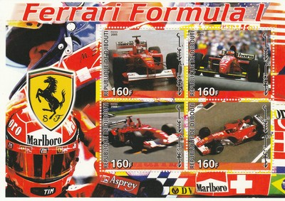
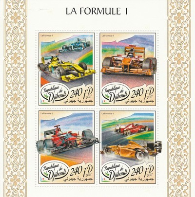
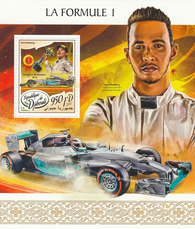
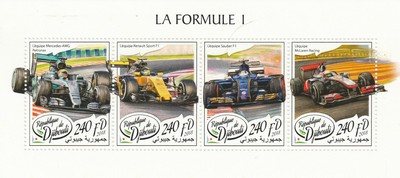
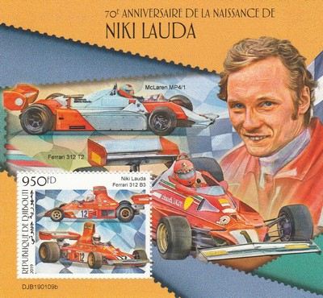
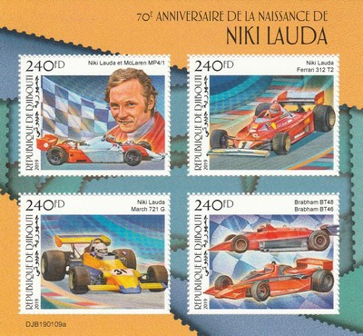
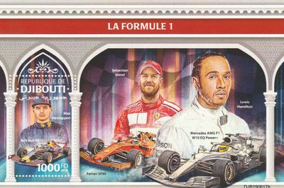
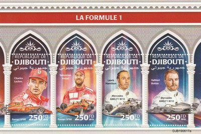

Republic of Djibouti
 |
 Issue date: 2005 A sheet of 4 stamps showing various Ferrari F1 cars.  Issue date: 2009 A sheet of 2 stamps showing Felipe Massa and Kimi Raikkonen. Felipe Massa started in F1 in 2002 with Sauber, he was Ferrari's test driver in 2003, but returned as Sauber's race driver for the 2004 and 2005 seasons. He returned to Ferrari as their race driver in 2006. His best result to date is runner up to Lewis Hamilton in 2008; it was in 2008 that Massa just lost out on the drivers title in a thrilling finale to the season at the Brazilian Grand Prix. Kimi Raikkonen drove in F1 from 2001 to 2009, winning the drivers title in 2007 with Ferrari. Raikkonen drove for McLaren and Sauber prior to joining Ferrari in 2007. Raikkonen left F1 at the end of 2009 season to take part in the World Rally Championship.  Issue date: 28th July 2017 A mini sheet of four values featuring various F1 cars.  Issue date: 28th July 2017 Nico Rosberg won the drivers' title after an intense season competing against team mate Lewis Hamilton in 2016. As of 2017, Rosberg is the only driver to win the championship apart from Sebastian Vettel and Hamilton since 2010. He is also only the second son of a former champion, after Damon Hill, to have won the title himself, and the first to have achieved this feat while his father is alive, and in a car bearing the same racing number as his father's car (6). He is also the first-ever German F1 driver to win a title in a German team with a German engine. Rosberg won the International Racing Driver Award at the 2016 Autosport Awards. The award was first won by his father Keke in 1982. Rosberg announced his immediate retirement from F1 on 2 December 2016 at the FIA Prize Giving Ceremony in Vienna. The decision came after he reached the 'pinnacle' of his career after winning the 2016 World Drivers' Championship. He was the first reigning champion to do so since Alain Prost in 1993.  Issue date: 19th February 2018 A mini sheet of one value featuring various F1 cars and the Malaysian Grand Prix. The Malaysian Grand Prix was part of the F1 World Championship from 1999 to 2017 and it was held during these years at the Sepang International Circuit. In 2017 it was announced that no further races would be held due to rising hosting fees and declining ticket sales (probably due to the races's appeal being damaged by the more glamorous night-time event on a street track in Singapore).  Issue date: 19th February 2018 A mini sheet of four values featuring various F1 cars.  Issue date: 27th Februaruy 2019 A mini sheet of one value issued to commemorate Niki Lauda's 70th birthday (22nd February 2019). The following cars are depicted: - McLaren MP4/1 (1983) - Ferrari 312 T2 (1976 and 1977 - 1977 drivers' title) - Ferrari 312 B3 (1975 and 1975 - 1975 drivers' title)  Issue date: 27th Februaruy 2019 A mini sheet of four values issued to commemorate Niki Lauda's 70th birthday (22nd February 2019). The following cars are depicted: - McLaren MP4/1 (1983) - Ferrari 312 T2 (1976 and 1977 - 1977 drivers' title) - March 721G (1972) - Brabham BT46 (1978) - Brabham BT48 (1979)  Issue date: 12th December 2019 A mini sheet of one value featuring the following cars and drivers: - Max Verstappen, Red Bull RB15 (2019) - Sebastian Vettel, Ferrari SF90 (2019) - Lewis Hamilton, Mercedes AMG F1 W10 EQ Power+ (2019)  Issue date: 12th December 2019 A mini sheet of four values featuring the following cars and drivers: - Charles LeClerc, Ferrari SF90 (2019) - Sebastian Vettel, Ferrari SF90 (2019) - Lewis Hamilton, Mercedes AMG F1 W10 EQ Power+ (2019) - Valtteri Bottas, Mercedes AMG F1 W10 EQ Power+ (2019) |